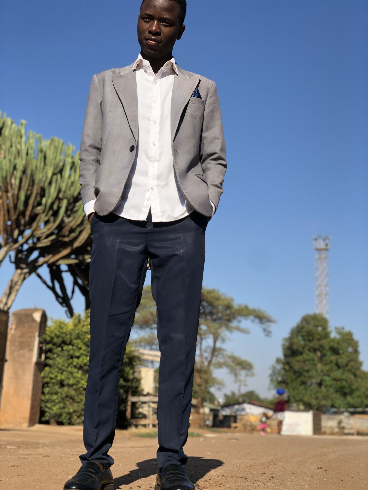
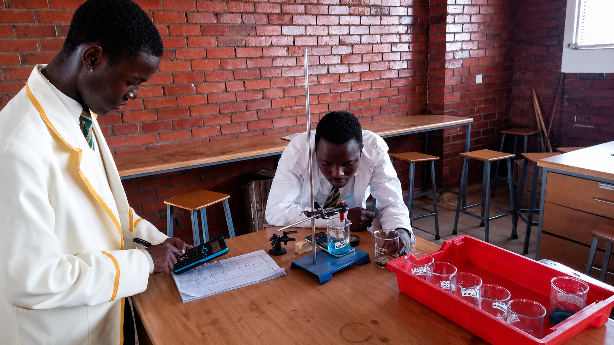

Tafara Brendon Makarutse
Future Metallurgical Engineer | Chemistry & Materials Science Enthusiast
About Me

I am a science student passionate about chemistry, materials science, and metallurgy. I enjoy understanding the scientific principles behind industrial processes and developing solutions to real-world problems.
Projects
Beer-Lambert Law Spectrophotometer Project
A research project applying Beer-Lambert law to determine copper(II) sulfate concentration using light absorption measurements and data analysis.
Skills & Interests
- A-Level Chemistry
- Mathematics and problem solving
- Materials science
- Mineral processing and metallurgy
- Scientific research
Career Vision
My goal is to develop expertise in metallurgy and materials technology,
contributing to mineral processing, innovation, and industrial development.
2
Our Educational Trip to Rainbow Towers Hotel
As part of our journey of learning and professional growth, we had the opportunity to visit Rainbow Towers Hotel, where we explored a space filled with knowledge, innovation, and inspiration. The trip allowed us to listen to experienced professionals and educational experts who shared valuable insights about leadership, career development, technology, and the importance of continuous learning.
Capturing Moments From The Experience

Arriving at Rainbow Towers Hotel and beginning our learning experience.

Listening to experts share knowledge and experiences.

Learning from professionals and understanding real-world challenges.

Building connections and exchanging ideas with other learners.
What We Learned
The experience showed us that success requires curiosity, discipline, teamwork, and a willingness to learn from people who have already walked the path we hope to follow. The speakers highlighted the importance of developing skills, embracing challenges, and using education as a tool to create meaningful impact.
Personal Reflection
This visit was more than just a trip; it was an opportunity to expand our perspectives and understand the connection between education, innovation, and the future. We left inspired to continue improving ourselves and preparing for future opportunities.
Email: makarutsetafara@gmail.com